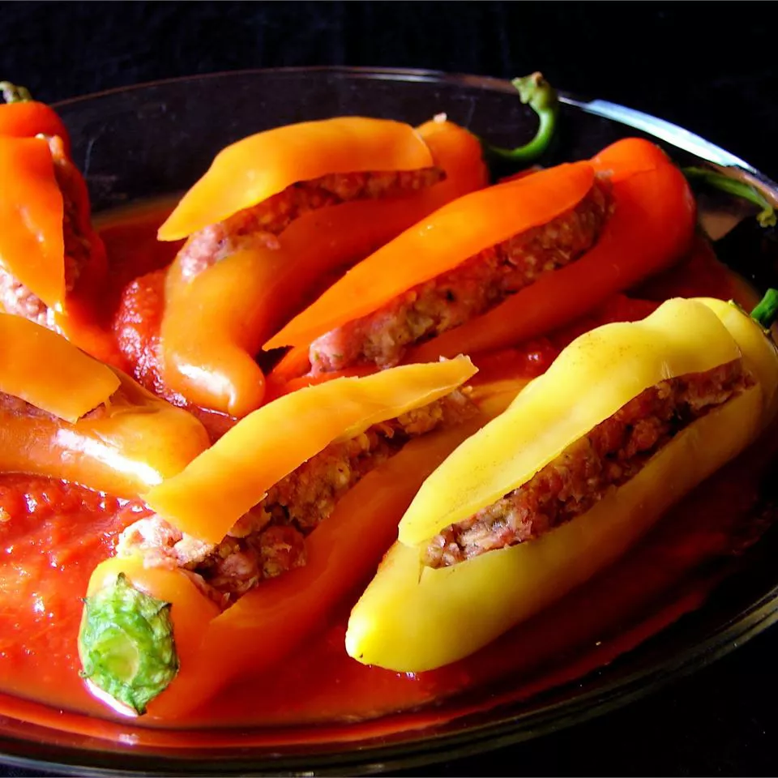

Bob's Stuffed Banana Peppers

Description
These stuffed banana peppers are filled with an Italian sausage mixture and baked in a delicious tomato sauce.
Ingredients
- 8 banana peppers
- 2 tablespoons butter
- ½ cup chopped onion
- ½ cup chopped celery
- 1 (28 ounce) can crushed tomatoes/li>
- 1 (8 ounce) can tomato sauce
- 2 cloves garlic, minced
- 2 ½ teaspoons salt, divided
- 1 teaspoon dried basil
- 1 teaspoon dried oregano
- ½ teaspoon ground black pepper, divided
- ½ cup grated Parmesan cheese
- 1 large egg
- 1 teaspoon Worcestershire sauce
- 1 pound hot Italian sausage
- 1 pound mild Italian sausage
- 1 ½ cups bread crumbs
Steps
- Cut off the tops of peppers. Remove ribs and seeds; rinse peppers. Chop edible portion of the tops; set aside.
- Bring a large pot of salted water to a boil. Add peppers, reduce heat, and simmer until tender but still firm, about 5 minutes. Drain and set aside.
- Heat butter in a medium skillet over medium heat. Sauté reserved chopped pepper, onion, and celery in hot butter until tender, 3 to 5 minutes. Stir in crushed tomatoes, tomato sauce, and garlic. Season with 1 1/2 teaspoons salt, basil, oregano, and 1/4 teaspoon black pepper. Simmer uncovered for 10 minutes.
- Preheat the oven to 350 degrees F (175 degrees C).
- Meanwhile, combine Parmesan cheese, egg, Worcestershire sauce, 1 remaining teaspoon salt, and remaining 1/4 teaspoon black pepper in a large bowl. Mix in hot sausage, mild sausage, bread crumbs, and 1 cup tomato sauce mixture until well combined.
- Fill each pepper with sausage mixture using a piping bag or sausage stuffer. Place in a 3-quart casserole dish; pour remaining tomato sauce mixture over peppers.
- Bake uncovered in the preheated oven until sauce is bubbly and sausage is cooked through, about 1 hour. An instant-read thermometer inserted into the filling should read at least 160 degrees F (72 degrees C).